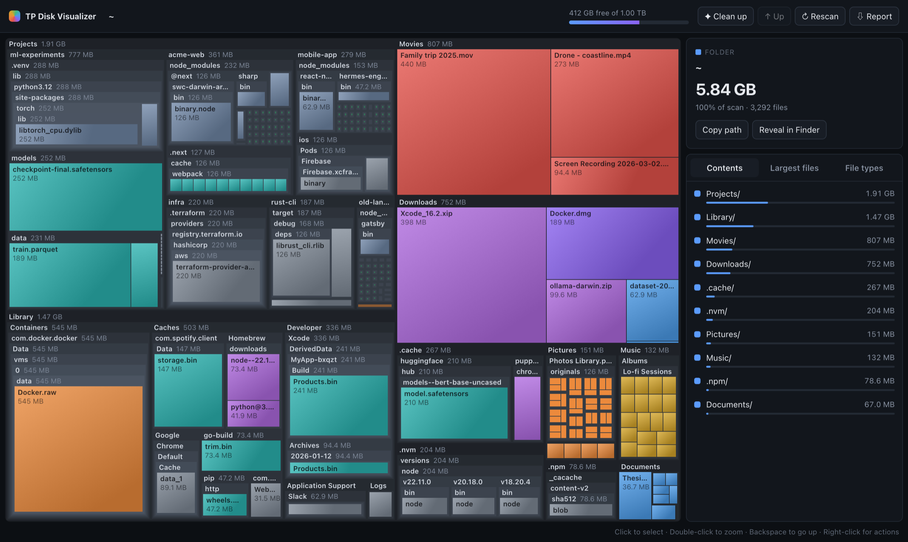
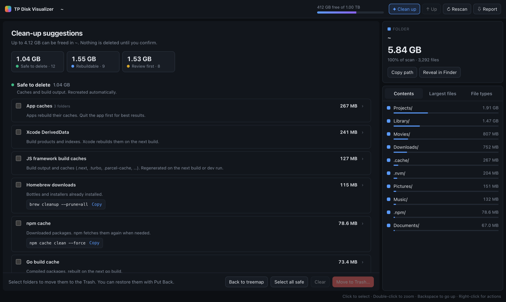

tpdv scans millions of files in seconds, maps them as an interactive treemap in your browser, and tells you which caches and build folders are safe to clean.

duA command-line tool with a browser UI. It runs locally, keeps nothing, and gets out of the way.
Uses macOS getattrlistbulk to read whole folders in one call, across parallel workers. Sizes match du exactly.
Nested, color-coded by file type. Hover for details, double-click to drill in, right-click to reveal or trash.
Finds node_modules, build caches, Xcode data and package caches, and explains why each one is safe to remove.
tpdv report writes one self-contained HTML file. It opens anywhere, works offline, and has the full treemap.
The UI is served on 127.0.0.1 with a one-time token. Nothing is uploaded, and there's no telemetry.
tpdv top and tpdv suggest print the biggest items and clean-up candidates without opening a browser.
Every suggestion comes with a safety level, a one-line reason, and the tool's own cleanup command where there is one.
.next, DerivedData, app caches, logs.node_modules, .venv, target, .terraform, Pods.package.json next to node_modules
A developer folder with 3.0 million files and 73 GB, on an Apple Silicon MacBook with a warm cache.
| Tool | Time | |
|---|---|---|
du -sk | 71.7 s | |
| readdir + lstat, parallel | 25.5 s | |
| tpdv (getattrlistbulk) | 15.7 s |
Needs Go 1.22 or newer. Grant your terminal Full Disk Access to include protected folders.
# install $ go install github.com/ratan99/tp-disk-visualizer/cmd/tpdv@latest # or build from source $ git clone https://github.com/ratan99/tp-disk-visualizer $ cd tp-disk-visualizer && make install
$ tpdv # your home folder, in the browser $ tpdv / # the whole disk $ tpdv suggest # what you can clean $ tpdv report ~ -open # shareable HTML report $ tpdv top ~/Downloads # terminal summary
See the live demo first; it's a real tpdv report of a sample home folder.